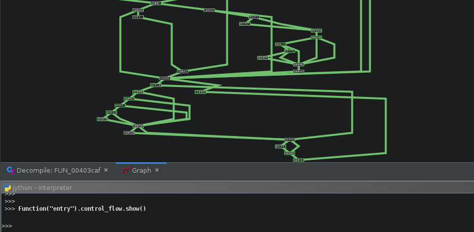
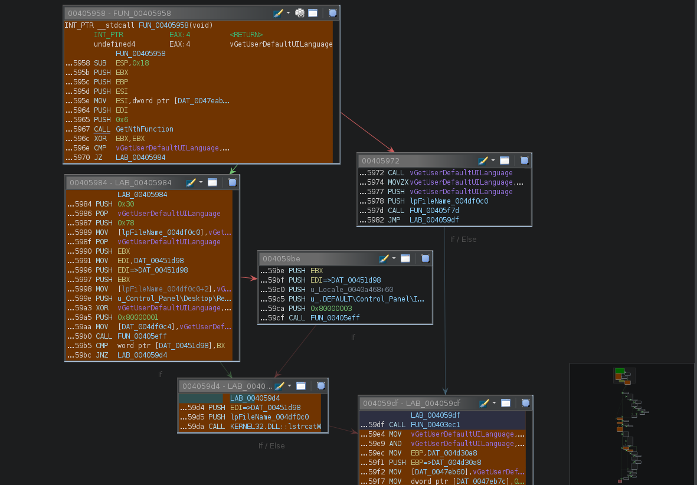
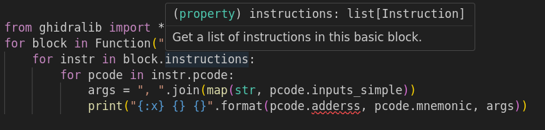

Getting Started
This document contains an introduction to the most important objects wrapped by this library, and a few more motivational segments.
If you prefer to learn by example, check out the examples directory, or the tests. For a more complete reference, see the API documentation.
- Main Actors - description of the most important ghidralib objects
- Working at various abstraction levels description of the various abstraction levels wrapped (and made easy!) by ghidralib.
- Conventions this library follows some design rules. They are hopefully intuitive, but understanding them may make your first steps easier.
- IDE configuration I strongly recommend using an IDE that supports type-checking.
Installation
To use ghidralib, just drop this file into your ghidra_scripts directory. Click here for a direct download link.
Main actors
A lot of objects are wrapped by this library. The most important at the beginning are:
- Function - a function recognised by Ghidra
- Instruction - assembly instruction
- DataType - a configured data type
- Symbol - a named address (also called a label)
Function
A function is a named block of code. Not all code in Ghidra belongs to a function, but being in a function makes it easier to reason about - for example, we can talk about parameters, variables, return values, etc.
Check these usage examples:
from ghidralib import *
# Get a function at address 0x8ca3f0
Function(0x8ca3f0)
# Get a function named "main"
Function("main")
# Print all assembly instructions in main function
for instr in Function("main").instructions:
print(instr)
# Print all pcode instructions in main function
for instr in Function("main").pcode:
print(instr)
# Print all high-level pcode instructions in main function
# Or you can do it in 100 lines of Java:
# https://github.com/evm-sec/high-pcode/blob/main/HighPCode.java
for instr in Function("main").high_pcode:
print(instr)
# Print all basic blocks in main function
for block in Function("main").basicblocks:
print(block)
# Print high variables in main function
# These are the variables as seen by decompiler - the ones
# that one thinks about when reversing
print(Function("main").high_variables)
# Get the control flow graph of the main function...
# ...and show it! (you can also do something more useful with it)
Function("main").control_flow.show()
# Decompile the main function and print the C code.
print(Function("main").decompile())
# Define a function at address 0x400300
Function.create(0x400300, "main")
# Use symbolic execution to infer values of eax and edx at each call site
for call in Function("MyCustomCrypto").calls:
ctx = call.infer_context()
key, data = ctx["eax"], ctx["edx"]
print(key, data)
# Infer parameters for each call to this function (using the decmopiler)
for call in Function("MyCustomCrypto").calls:
key, data = call.get_args()
print(key, data)
# Rename functions calling this function
for caller in Function("MyCustomCrypto").callers:
# Use caller address as a suffix. It's often useful to combine this with
# emulation, so you can put more context in the name.
caller.rename("CallsCustomCrypto_{}".format(caller.address))
# Emulate a function call and pass parameters (using the function signature)
ctx = Function("GetFuncNameByHash").emulate(0x698766968)
print(ctx.read_cstring(ctx["eax"]))
# Use Ghidra's SymbolicPropagator to get known register values
ctx = Function(0x401000).symbolic_context()
print(ctx.register_at(0x401020, "eax"))
Read more in the Function object documentation.
Instruction
Instructions represent a single assembly operation.
They have a mnemonic (e.g. mov), operands (e.g. eax, 3),
and a pcode representation used for further analysis.
Check these usage examples:
# Get an instruction at address 0x8ca3f0
Instruction(0x8ca3f0)
# Get the first instruction in main function
Instruction("main")
# Print the instruction mnemonic and operands
instr = Instruction(0x8ca3f0)
print(instr.mnemonic, instr.operands)
# Print the instruction pcode:
for op in instr.pcode:
print(op)
# Print the instruction high-level pcode:
for op in instr.high_pcode:
print(op)
Read more in the Instruction object documentation.
DataType
Data types are used to describe the structure of data in memory.
Check these usage examples:
# Get a datatype called "int"
DataType("int")
# Parse a datatype from C string
HINTERNET = DataType.from_c('typedef void* HINTERNET;')
# Change a datatype at location
create_data(0x1234, HINTERNET)
# You can also create structures from C code strings:
foo = DataType.from_c('struct foo { int a; int b; };')
Read more in the DataType object documentation.
Symbol
Sometimes called a label. Check these usage examples:
# Get a symbol (label) at address 0x8ca3f0
Symbol(0x8ca3f0)
# Get a symbol (label) named "main"
Symbol("main")
# Create a label "foo" at address 0x1234
Symbol.create(0x1234, "foo")
# Change the symbol's data type
Symbol("DAT_1234").set_type(HINTERNET)
# Print all symbols in the program
for symbol in Symbol.all():
print(symbol)
# Rename all unknown data to something funniner
for symbol in Symbol.all():
if symbol.name.startswith("DAT_"):
symbol.rename("funniner_" + symbol.name")
Read more in the Symbol object documentation.
Working at various abstraction levels
In this section I'll briefly summarize ghidralib objects that you can use to work at various abstraction levels.
-
Assembly instructions - at the lowest level, there is assembler. You will use familiar Instruction, BasicBlock and Function. When analysing data, you will think in terms of Registers of Variables, and references are in terms of Symbols.
-
Pcode instructions - here you think in terms of PcodeOps, and PcodeBlocks. You still work with Functions, but the data flows between architecture-independent Varnodes now instead.
-
High Pcode instructions - after the decompilation, many things change. You stil work with PcodeOps, but they are significantly transformed - referred as "High Pcode" in this library. You now think in terms of High Functions, High Variables, and High Symbols. Even Varnodes are now slightly more powerful (under the hood they are
VarnodeASTsnow). -
Pcode syntax tree (
Function.pcode_tree) - As far as I know, there was no easy way to work with it. I hope ghidralib makes this much easier. On this level, you still have high PcodeOps, but syntactic elements like "dowhile" loops, "if" statements etc, are now recovered and you can traverse the syntax tree (while still dealing with PcodeOps). -
C abstract syntax tree (AST) - built internally by the decompiler, but not exported by Ghidra. I hope to add support for it in ghidralib one way or another, but for now there is no way to access it.
-
Clang tokens (
Function.tokens) - a stream of tokens that represent the C code. It is very detailed, to the level that it contains even whitespace. You can clean them up, but the data is still overprocessed a bit too much, and not useful (IMO) during analysis. Ghidra uses it for display.
Showcase
In this section I'll present a few examples of impressive-but-not-necessarily-useful things you can do with ghidralib.
Emulation
Emulate the program from 0x400300 to 0x400400. When finished, read the value of eax
and the memory at 0x401000.
# Create a new emulator and execute code between 0x400300 and 0x400400
emu = Emulator()
emu.emulate(0x400300, 0x400400)
print(emu["eax"])
print(emu.read_bytes(0x401000, 16))
# Emulate a function call and pass parameters (using the function signature)
ctx = Function("GetFuncNameByHash").emulate(0x698766968)
print(ctx.read_cstring(ctx["eax"]))
In practice you can often use this for recovering obfuscated strings, or unpacking simple packers.
Graphs
# Get the control flow graph of the main function (and display it)
Function("main").control_flow.show()
Graph visualisation is not the most useful feature of this library, but it looks cool:

And you can easily build the graph yourself:
g = Graph.create()
foo = g.vertex("foo")
bar = g.vertex("bar")
g.edge(foo, bar)
g.show()
Or you can do some actually useful things with included graph algorithms (DFS, BFS, and topological sort) - like tracing paths between functions.
Path finding
Find the shortest path from source to target in the program control flow graph. If it exists, highlight all basic blocks along the way.
source, target = BasicBlock("entry"), BasicBlock(0x00405073)
path = Program.control_flow().bfs(source)
while path.get(target):
target.highlight()
target = path[target]

You can highlight anything that has an address (like a basic block, function, or a single instruction). Call .unhighlight() to clear the highlight.
Conventions
There are a few conventions that this library follows, and which may be useful when learning:
- This library completely ignores the Ghidra "Address" abstraction. Plain integers are used everywhere instead. Address abstraction is very powerful, but not necessary for most use cases (at least my use cases).
If this is a problem for you, please let me know - maybe there is a simple way to make ghidralib work for you.
- Every object that wraps a Ghidra object has a
.rawproperty that can be used to get the unwrapped object. So you can always "escape" ghidralib:
Function("main").raw.UNKNOWN_STACK_DEPTH_CHANGE
2147483647
- Objects that have an address can be addressed in many different ways - by name, by address, or by Ghidra address object. All of these are equivalent:
Function("main")
Function(0x669d1e)
Function(toAddr(0x669d1e))
- Additionaly, wrappers are "tolerant" and try to drop unnecessary layers. All of these are resolved to the same object:
Instruction(getInstructionAt(toAddr(0x0669d2a))) # from raw object
Instruction(0x669d2a) # from integer
Instruction(Instruction(0x669d2a)) # wrapped two times
- Same goes in the other direction btw - Java API will accept wrappers
getInstructionBefore(getInstructionAt(toAddr(0x0669d2a))) # pure java
getInstructionBefore(Instruction(0x0669d2a)) # mixup library object
-
Many objects expose a static constructor methods, where it makes sense. Possible methods are "get", "create", "all", "create". So for example instead of
getAllSymbols()useSymbols.all(). -
The difference between
Function.get(addr)andFunction(addr)is thatFunction.getreturnsNoneinstead of raising an exception when the desired object was not found.
IDE Configuration
I strongly recommend using an IDE that supports type-checking. This is why:

I personally use is VS Code with Python extensions. If you install VsCode/VsCodium, a Python extension, and just drop ghidralib.py in the ghidra_scripts directory, then everything should "just work".
If for some reason your script lives in a different directory than ghidralib, override the PYTHONPATH so the typechecker knows how to import it:
{
"python.analysis.extraPaths": ["/home/you/Projects/ghidralib"],
"terminal.integrated.env.windows": {
"PYTHONPATH": "/home/you/Projects/ghidralib",
}
}